New
Decoy, now on your TV.
A home screen made for the remote: the look you want, the apps you use up front, and a PIN on the ones that need it.
For Android TV and Google TV. It's the same Decoy app as on your phone; on a TV it opens the TV home screen by itself.

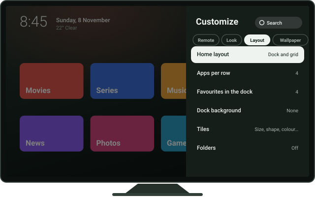
Everything it does on a TV
All of it is in Customize, the button in the top corner of the home screen. Its tabs go from the TV and the remote, through how the home screen looks, to locks, profiles and backups. And it has its own search, so you don't need to remember where anything is.
Home screen
- 56 themesBlack, dark, colourful, light, Material and code-editor palettes, with your own accent colour and font.
- Styled themes14 themes that also change the tiles, icon backgrounds, icon colour, font and focus, like Terminal, Black and gold or Playground.Premium
- Tiles your wayBanners, icon cards or round icons; size, shape, colour, outline, names and the focus effect.
- Three layoutsDock and grid, rows by category, or minimal. 4 to 7 apps per row.
- Clock and corner buttonsGreeting, clock and date, plus up to 13 buttons: search, inputs, Bluetooth, volume, sleep and more.
- WallpaperThe theme's own, Bing's photo of the day, or a solid colour, with darken, blur and slow zoom.
- Search with your voiceFind any app by typing or speaking.
Widgets
- 33 widgetsWeather, calendar, flip, word, ring, neon and binary clocks, now playing, Play next, photo frame, system details with the TV's IP, and more.
- Anywhere on the home screenEach widget goes above the favourites, below them or below all apps. Hold OK on one, then Left or Right to move it.
- Timer and sleep timerA countdown that rings over any app, and a timer that turns the TV off.
What's on New
- Up nextOne row of what to watch: shows you've started, next episodes and what your apps feature, opened straight in their app.
- Play next and your apps' picksContinue watching, next and new episodes and your watchlist, and the picks from apps' channels.
- Your choice of what showsWhich apps, how many cards from each (two to start with), the order, the size and shape, or a row for each app.
Lock and profiles
Remote, backup and setup
- Remote buttonsColour buttons open the apps you pick; held number buttons and extra buttons like Bookmark or Guide come with Premium.
- Photo screensaverPhotos and a clock, also usable as the TV's own screensaver.
- TV to TV, and automatic backupsCopy your setup to another TV with a 6-digit code; earlier versions are kept for you.
- Search in settingsType "colour" or "PIN" and go straight to the setting.
Make Decoy your TV's home screen
The first time it opens, Decoy asks a few questions: start fresh, or bring your settings from another TV, a phone or a backup file. Then make it the home screen.
On most Android TVs
- Install Decoy Launcher from Google Play on the TV.
- Open it and go through the short setup.
- In Customize › Remote & boot, choose Default home app and pick Decoy.
On Google TV
Google TV doesn't let you choose another home app, so Decoy does it with the accessibility service:
- In Customize › Remote & boot, turn on the Accessibility service. Decoy explains what it's for first.
- Turn on Replace the TV's home screen. Pressing Home now opens Decoy.
- Optionally, turn on Start on boot so Decoy opens when the TV turns on.
The accessibility service only checks which app is in front. It doesn't read what's on screen, and nothing is saved or sent anywhere.
Prefer a computer? Set it with ADB
With developer options and ADB debugging on, this makes Decoy the home app on TVs that hide the setting:
adb shell cmd package set-home-activity com.jeet_studio.decoy_launcher/.screens.MainActivity
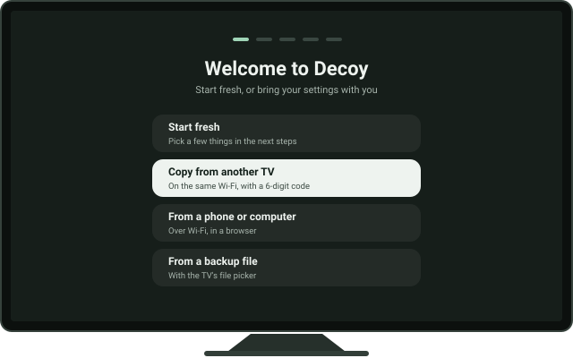
Open Customize
WhereThe Customize button in the top corner of the home screen
Everything is in Customize. Its tabs go from the TV and the remote, through how the home screen looks, to locks, profiles and backups.
Premium is at the top of Customize: buy it on the TV, or scan its code to buy on your phone.
Themes and look
WhereCustomize›Look›Theme
Pick one of 56 themes, in groups: black, styled, dark, colourful, Material, code-editor palettes and light. The 14 styled themes Premium go further than colour: Terminal turns every icon green on square cards, Playground puts big round icons on their own colours, Black and gold outlines everything in gold. A switch at the top keeps your own tiles if you only want the colours.
Hold OK on any theme to change everything it sets, from its background colours to the icon backgrounds and font; your version is kept for that theme. Then make it your own:
- An accent colour and font, and themed icons that redraw every icon in one colour
- The clock in a compact row or big and stacked, with a greeting and your name
- Bing's photo of the day as the wallpaper, a solid colour, or the theme's own moving colours
- Corner buttons for the things you reach for: inputs, Bluetooth, volume, notifications, recent apps, the Play Store
- Three layouts: dock and grid, rows by category, or minimal, with 4 to 7 apps per row
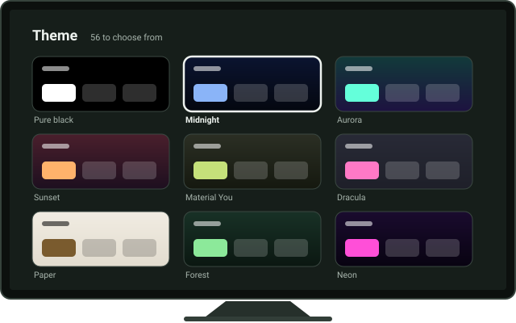
Tiles, down to the last detail
WhereCustomize›Layout›Tiles
Every app tile follows your choices, with a live preview while you change them.
- Size and shape: banners, icon cards or round icons; wide, 4:3, square or tall poster tiles
- Colour: 72 preset colours, or make your own with three sliders or a colour code
- Outline and shadow, opacity, icon size, and names under the tile or inside it
- Focus: gliding glass, lift, glow or outline, in the colour you choose
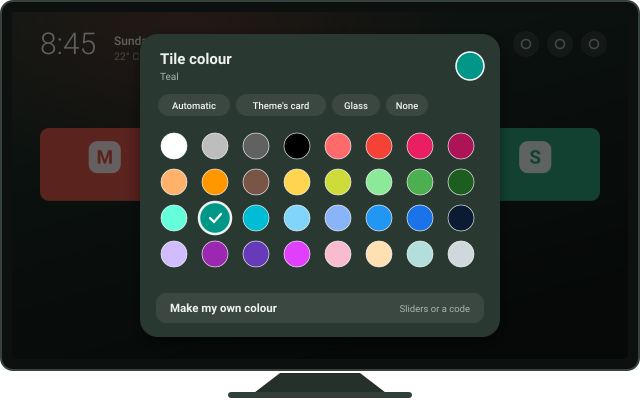
33 widgets, moved with the remote
WhereCustomize›Widgets
- Turn on the widgets you want.
- On the home screen, hold OK on a widget to move it with Left and Right, make it wider or narrower, or change its options.
- Under Where, put it above the favourites, below them or below all apps, mixed with the others there.
Play next and the picks from your apps, weather and hourly forecast, calendar, world clock, clocks in every style (big digital, analog, flip, in words, rings, neon, binary and day progress), now playing, photo frame, network speed, system details (memory, storage, the TV's IP address, Wi-Fi signal, model, screen and temperature), quick settings, TV inputs, recently used apps, notes, countdowns, quotes, word of the day, exchange rates, crypto prices, a breathing guide, screen time, a timer and a sleep timer.
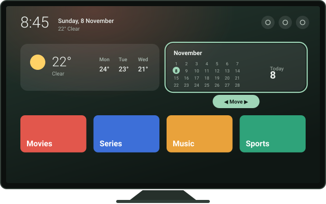
Up next cards New
WhereCustomize›Cards
Turn on Cards and the home screen gets a row of what to watch, like the TV's own home screen: shows and films you've started, the next episode, new ones and your watchlist, and what your apps feature on their channels. OK opens it straight in its app, with that app's PIN and time limit still in place.
- Turn on Cards. If the TV asks, allow Decoy to see what apps share.
- It starts as one row with no more than two cards from any app.
- Choose the apps, how many cards each one gets, the order, the size and shape, and where the row goes, or give every app a row of its own.
Hidden apps and apps outside the profile in use never show.
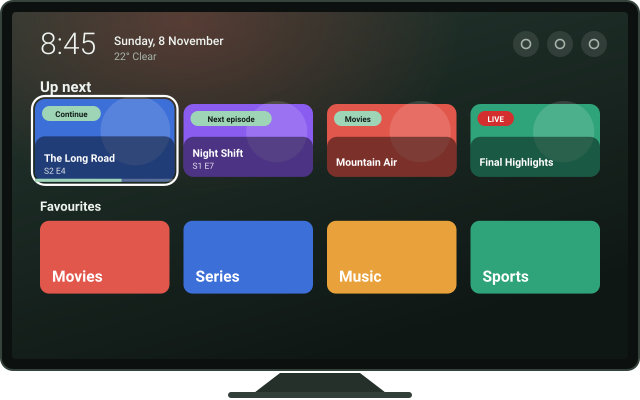
A PIN on the apps that need one
WhereCustomize›Lock & profiles›App lock
- Locked apps ask for your PIN, typed with the number buttons or the arrows
- Lock Customize too, so nobody changes your setup
- Choose how long an app stays unlocked, or ask every time
With the accessibility service on, a locked app also asks for the PIN when it's opened another way, such as from the TV's own menu.
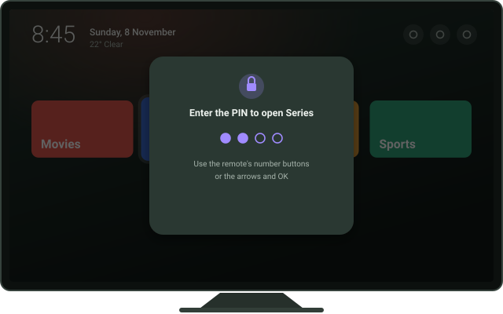
Kids and Guest profiles Premium
WhereCustomize›Lock & profiles›Profiles
- Kids, Guest or your own kind of profile, each with only the apps you choose
- A daily time limit and a bedtime, with screen time to see where the hours went
- A PIN to leave, and type your PIN on the number buttons to switch back to your own home screen
- Widgets on or off, and a theme of its own
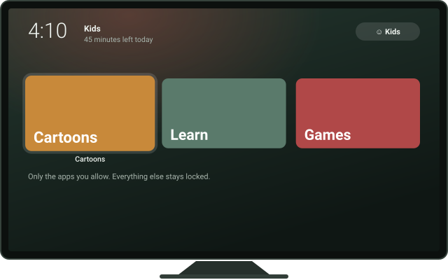
Fake crash Premium
WhereCustomize›Lock & profiles›Fake crash
Choose apps that show a convincing "has stopped" message instead of opening, in one of several styles. You pick the way through: holding a button, your PIN, or a colour button.
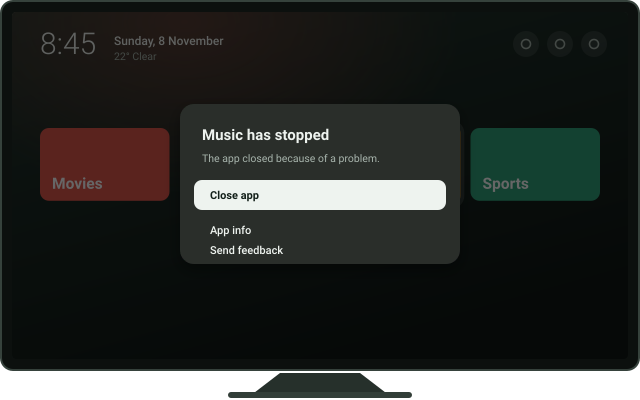
Every button on the remote, put to work
WhereCustomize›Remote buttons
- Set the red, green, yellow and blue buttons to open an app or do something: start the screensaver, set a 30-minute sleep timer, play or pause, switch profile, open search.
- With Premium, hold a number button for more shortcuts.
- To add an extra button like Bookmark, Guide or Play/pause, press it on the remote and choose what it does, and what holding it does.
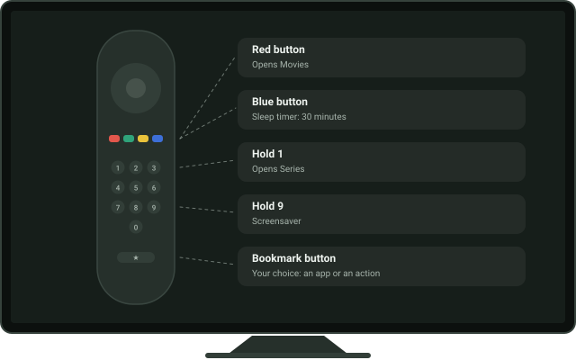
A screensaver worth looking at
WhereCustomize›Screensaver
Photos with a slow pan and zoom, a clock, or both. Use it as the TV's own screensaver, or start it with a corner button or a remote button.
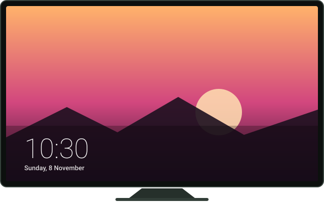
Set it up once, use it on every TV
WhereCustomize›Backup & reset
- TV to TV: on the new TV choose Copy from another TV, pick the TV and type the 6-digit code it shows
- From a phone or computer: over Wi-Fi in a browser, or from a backup file
- Automatic backups: saved a minute after changes; go back to any of the last six
- Your PIN is never included in a backup
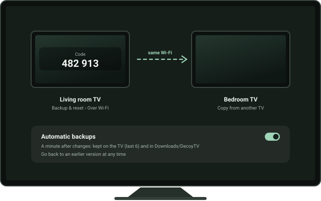
Find any setting in a second
Customize has a search at the top, and the remote's search button opens it. Type or say what you're after, such as "colour" or "PIN", and OK takes you straight to that setting.
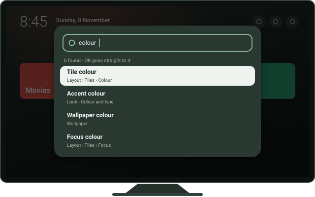
Trying it on a phone or tablet
WhereHome settings on the phone›General›TV home screen›Always
You can see the TV home screen on a phone or tablet before you install it on the TV. To go back to the phone's home screen, open Customize and press the red Leave button next to Premium. It only shows on phones and tablets, never on a real TV.
TV questions
Do I need a separate app for the TV?
No. Install Decoy Launcher from Google Play on the TV. It's the same app as on your phone and opens the TV home screen by itself.
Will it work on Google TV?
Yes. Google TV has no home app setting, so turn on the accessibility service and "Replace the TV's home screen" in Customize › Remote & boot. See setting it up.
Can my kids get out of their profile?
Each profile can need your PIN to leave, and apps outside the profile stay locked. With the accessibility service on, that holds even for apps opened from the TV's own menus.
What's free, and what's Premium?
Most of Decoy is free: app lock and PIN, hidden apps, 42 themes, tiles, widgets, search, folders, the screensaver, backups and TV-to-TV copy. Premium is one payment, with no subscription, and adds the 14 styled themes, changing any theme, your own colours, Kids and Guest profiles, fake crash, and number and extra remote buttons. Press Premium at the top of Customize to buy it on the TV, or scan its code to buy on your phone. One purchase covers every phone and TV on the same Google account.
Why doesn't a remote button work?
Some buttons are kept by the TV itself, such as Netflix or YouTube buttons on many remotes, volume and power. Those can't be changed. Colour, number and most other buttons can.
Why isn't every app in Up next?
Up next shows what apps add to the TV's Play next list and their channels. Some apps only share with the TV's own home screen, and the TV asks you once before another home screen may see them: allow it from the Cards tab or the card itself.
What does it send to the internet?
Nothing about you or your apps. Some widgets fetch public information, such as the weather for the city you chose or exchange rates, and the wallpaper can be Bing's photo of the day. Pictures on Up next cards come from the apps that added them. Backups only go where you send them.
How do I get the TV's own home screen back?
Turn off "Replace the TV's home screen" in Customize › Remote & boot, or pick the TV's home app again under Default home app.